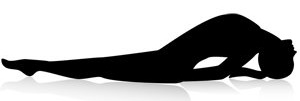

Fish Pose (Matsyasana)
- Lie on your back. Your feet should be together and hands relaxed alongside the body.
- Place the hands underneath the hips, palms facing down. Bring the elbows closer toward each other.
- Breathing in, lift the head and chest up.
- Keeping the chest up, lower the head backward and touch the top of the head to the floor.
- With the head lightly touching the floor, press the elbows firmly into the ground, placing the weight on the elbow and not on the head. Lift your chest up from in-between the shoulder blades.
- Press the thighs and legs to the floor.
- Hold the pose for as long as you comfortably can, taking gentle long breaths in and out.
- Now lift the head up, lowering the chest and head to the floor.
- Bring the hands back along the sides of the body.